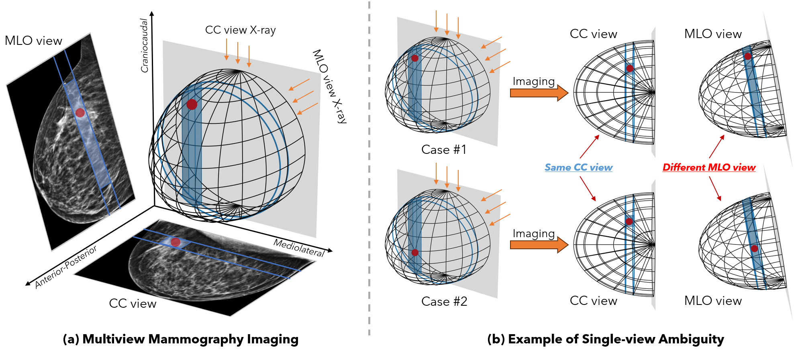
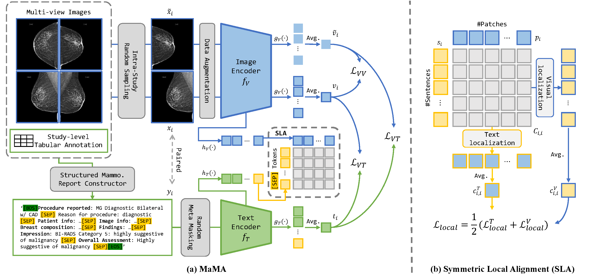
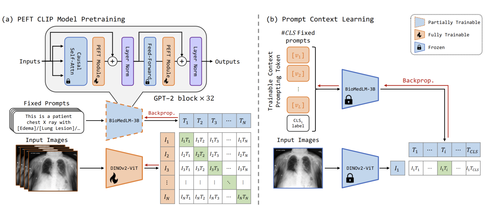
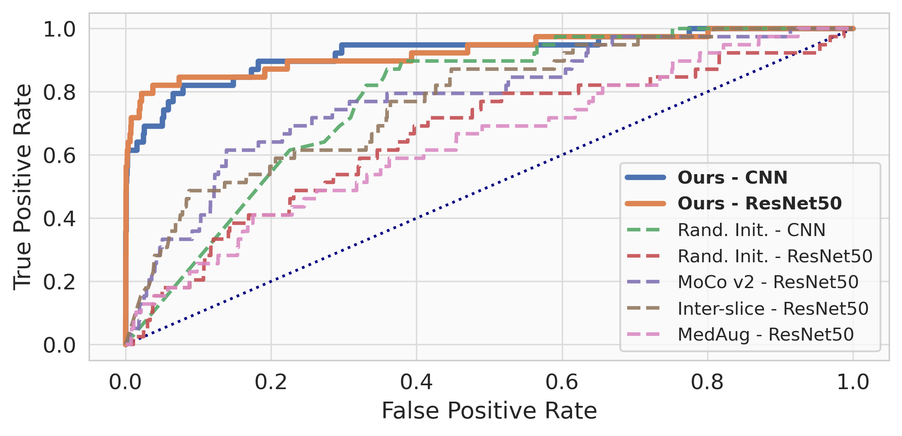
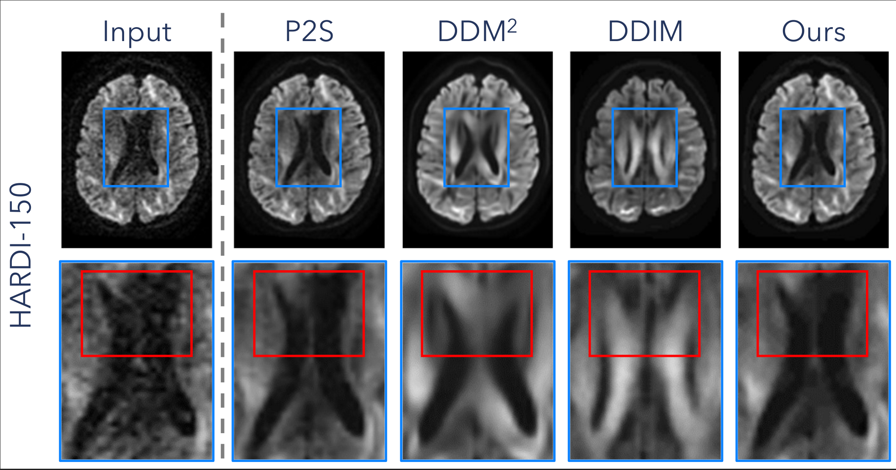

Bio
I am a fourth-year Ph.D. candidate at Yale University, majoring in BME, advised by Prof. Nicha C. Dvornek. I am also actively collaborating with Prof. John Onofrey. Before that, I got my Bachelor's degree in CS at the University of Michigan, Ann Arbor, advised by Prof. Andrew Owens, and another Bachelor's degree in ECE at Shanghai Jiao Tong University.
My research interest lies in the computer vision, multi-modality learning, and medical image analysis. I am always thrilled to work on questions that address real-world needs.
I am also honored to serve as a reviewer in conferences and journals, including CVPR, ICCV, ECCV, NeurIPS, AAAI, MICCAI, ISBI, ICLR, AISTATS, IJCAI, ICML, and IEEE-TMM, IJCV, IEEE-TPAMI, MedIA.
News
Nov 2025
I will join Google during the next summer as an Intern working with Dr. Yan Xu!
June 2025
One first-author paper "Geometry-Guided Local Alignment for Multi-View Visual Language Pre-Training in Mammography" got accepted by MICCAI 2025🎉! See you at Daejeon~
June 2025
I have joined MSRA for summer research internship, mentored by Dr. Jinglu Wang!
May 2025
Our paper "MaMA" was awarded with Best Oral Paper Runner-up (ranked #2) at IPMI 2025🎉! Huge honor to recieve this!
Feb 2025
Our paper "MaMA: Multi-View and Multi-Scale Alignment for Contrastive Language-Image Pre-training in Mammography" was accepted by IPMI 2025🎉 for Oral Presentation! See you in Greece (again)!
Jan 2025
Two papers about rotational equivarient convolution kernel accepted by ISBI 2025! See you in Houston!
Nov 2024
I have just passed my area exam and officially become a Ph.D. candidate!🎉
Oct 2024
I am honored to receive the $800 Yale University Conference Travel Funding!
Sept 2024
🎊We just won the
first place (#1) in the
MICCAI 2024 CXR-LT Challenge for the task of
Long-tail Classification on gold standard test set! We were also recognized as the
overall best-performing team and win a prize of $900! Really appreciate my collaborators!
Jun 2024
One first-author paper "CLEFT: Language-Image Contrastive Learning with Efficient Large Language Model and Prompt Fine-Tuning" is accepted by MICCAI 2024! I will be presenting this paper in person at Marrakesh!
Feb 2024
One first-author paper "SIFT-DBT: Self-supervised Initialization and Fine-Tuning for Imbalanced Digital Breast Tomosynthesis Image Classification" and one another paper accepted by ISBI 2024! See you in Athens!
Jun 2023
I'll join Nicha's Group as a Ph.D. student next semester and work on DBT data and Breast cancer.
Feb 2023
Our new work "Conditional Generation of Audio from Video via Foley Analogies" with Andrew has been accepted by CVPR 2023!
Jan 2023
Our work "RetCCL: Clustering-guided contrastive learning for whole-slide image retrieval" is now available on Medical Image Analysis (IF=10.9)!
Jan 2023
I will rotate at Prof. John Onofrey's lab this semester and working on rotational invariant feature extractor!
Sept 2022
I will join Yale University as a Ph.D. student majoring in BME!
Work Experience
Microsoft Research Asia - Media Computing Group
Dr. Jinglu Wang
Research Intern. Work on visual evidence grounded medical VQA agent based on RLVR.
Tencent AI Lab - AI Healthcare Group
Dr. Xiao Han, M.Sc Sen Yang
Algorithm R&D Intern. Work on pathological image selfsupervised representation learning and fast Whole-Slide Image(WSI) search system.
Selected Publications

GLAM: Geometry-Guided Local Alignment for Multi-View Visual Language Pre-Training in Mammography
MICCAI 2025

MaMA: Multi-View and Multi-Scale Alignment for Contrastive Language-Image Pre-training in Mammography
IPMI 2025 Oral, Best Oral Paper Runner-up (basis of the best solution of the MICCAI 24 CXR-LT Challenge)
SRE-Conv: Symmetric Rotation Equivariant Convolution for Biomedical Image Classification
IEEE ISBI 2025

CLEFT: Language-Image Contrastive Learning with Efficient Large Language Model and Prompt Fine-Tuning
MICCAI 2024

SIFT-DBT: Self-supervised Initialization and Fine-Tuning for Imbalanced Digital Breast Tomosynthesis Image Classification
IEEE ISBI 2024
Conditional Generation of Audio from Video via Foley Analogies
CVPR 2023
RetCCL: Clustering-guided contrastive learning for whole-slide image retrieval
Medical Image Analysis (IF=10.9)
Xiyue Wang, Yuexi Du, Sen Yang, Jun Zhang, Minghui Wang, Jing Zhang, Wei Yang, Junzhou Huang, Xiao Han
Selected Projects

Controlled and Self-supervised Diffusion MRI Denoising via Generative Diffusion
CPSC 586 Probabilistic Machine Learning Final Project
Yuexi Du
COLOR-VAE: Generative Colorization with Variational Auto-encoder
EECS 442 Computer Vision Final Project (Rank #1)
Yuexi Du, Muchen Xu, Yuang Zhang, Zhanhui Zhou, Chenshu Zhu
Teaching
EECS 442
Computer Vision. Instructor aide. Spring 2022 at UM. With
David Fouhey
VR 246
Introduction to Comics & Visual Art. Teaching Assistant. Spring 2021 at SJTU UMJI. With Jeolle Tybon
VE 101
Introduction to Computer & Programming. Teaching Assistant. Winter 2020 at SJTU UMJI. With
Jigang Wu